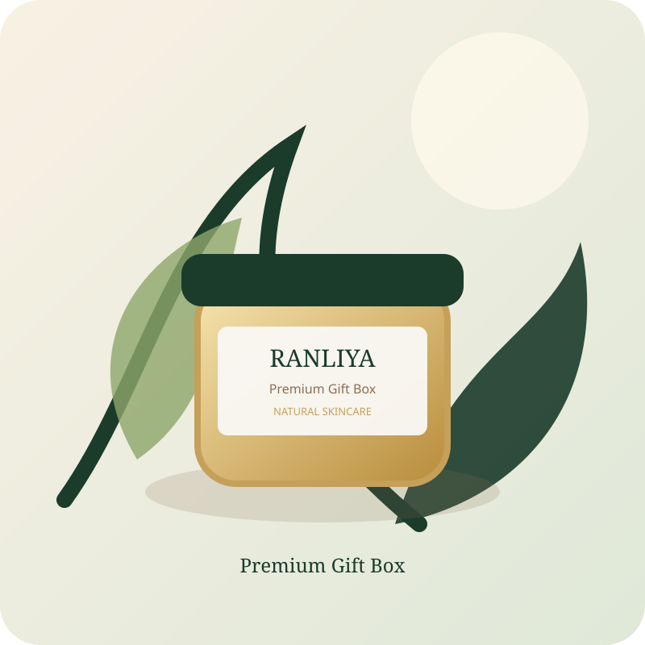

OUR STORYස්වභාවයෙන් ආරම්භ වූ
ස්වභාවයෙන් ආරම්භ වූ
රන්ලිය කතාව.
පැරණි ශාකසාර දැනුම සහ නවීන skincare සිතුවිලි අතර සුන්දර සම්බන්ධයක්.
ශ්රී ලාංකීය ස්වභාවය, නවීන අත්දැකීමක්.
රන්ලිය යනු දේශීය අමුද්රව්යවල සරල බලය modern beauty routine එකකට ගෙන එන්නට උත්සාහ කරන skincare සන්නාමයකි. කොහොඹ, පොල්, කෝමාරිකා, සහල් සහ කහ වැනි අමුද්රව්ය අපගේ visual identity එකටත් product philosophy එකටත් ආභාසය සපයයි.
අපගේ අරමුණ වන්නේ අතිශය සංකීර්ණ routine එකක් නොව, ඔබට දිනපතා ආදරයෙන් පවත්වාගෙන යා හැකි මෘදු සත්කාර අත්දැකීමක් නිර්මාණය කිරීමයි.

OUR INGREDIENTS
අපේ අමුද්රව්ය
🌿 කොහොඹ
පිරිසිදු කිරීම සහ සමේ fresh feeling එක සඳහා දේශීය ආභාසයක්.
🥥 පොල්
මෘදු moisturising සහ පෝෂණීය සත්කාර අත්දැකීමක්.
🌱 කෝමාරිකා
සම සන්සුන් කරන, cooling botanical care එකක්.